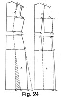
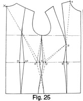

Early 1940's—Ladies' Garment Cutting and Making
by
F. R. Morris
Chapter IV—The Principles of Waist Suppression
The Correct Location of Waist Suppression
THE governing factor for balance and fit of a garment is the correct allocation and distribution of waist suppression. This factor is of major importance in the cutting of coats, as the influence for good or bad is felt throughout.
The extreme variations of comparative size between bust, waist, and hips, and diversity in shape in each of these sections, call for a specialized cutting and modelling knowledge before the natural shape and contour of the human frame can be satisfactorily fitted.
Scientific allowances for waist suppression are of no value unless the fundamental truth is realized that suppression in one location must always have the object of creating a closer fit elsewhere in conjunction, other than to influence the garment only in the location operated upon.
To be skilful cutters, we cannot go on mistakenly doing things without endeavouring to reason why defects occur, when according to system they should not do so. On the vital question of correct waist suppression, we must get down to essentials.
The principle involved is that a curve is longer than a straight line between two given points; this being so, length must be allowed and provided to enable the garment to follow the natural curves of the figure.
Once this fundamental truth is realized, we are progressing in the right direction. From his experience of modelling on a stand, and on a figure direct, the author has found that for the purpose of suppression, the human figure from the bust to the hip level may be divided into four distinct sections; which means that there are four distinct "flats," and four "bends" of the trunk, where the garment may be suppressed to the shape of the figure curves.
Suppression is only practicable and permissible on the "bends"; on the "flat" sections it is quite out of the question. For confirmation of these statements, examine the sectional views of the figure in Fig. 17. These sectional views represent the shape of an actual figure, and the measurements denote the positions where the body shape has the "bends" upon which suppression is possible and practicable.
Figure 17—Sectional Views of the Figure Illustrating Waist Suppression
Measuring on the model as Fig. 17 (a), the width of the chest level is approximately 8 inches before the back curves round under the arms to the side. At the waist line, the width is 7 inches, increasing to 9 inches at the hip level, which brings us to Fig. 17 (b) showing a side view of the model.
Now many cutters are misled by the apparent shape of the figure from A to B and C. This shape, they imagine (as the author was inclined to think once), is the shape of the centre back seam, and they endeavour to infuse this curve into their drafts, believing that the centre seam so drawn agrees with the profile view of the figure at A, B and C.
The profile view is not the shape of the centre back; it is the profile back "flat," which extends from the blades to the hip. If the centre back had a ridge or "bend" down it like the profile shape, suppression of the centre back seam would be correct, but, in this instance, the profile is the shape of the back at a point towards the side where the figure curves to the underarm section. Therefore, as this back plane is to all intents and purposes flat, a flat piece of material laid over and following the curves of the body would fit perfectly, within the bounds of the plane section. It is obviously incorrect and impracticable to suppress at the centre back seam in an endeavour to obtain the shape of the figure between A, B, and C in Fig. 17 (b), yet there are literally hundreds of scientific cutters who use this practice of shaping the centre seam to conform to the profile shape of the back.
In Fig. 17 (b) there is a fiat section under the arms from the breast line to the waist line, in width approximately 8 ½ inches at the top and 5 inches at the waist level. Below the waist line to the hip level, the hip prominence shows an increase of size and angle from the "flat" immediately above. From Fig. 17 (a) it will be noticed that the side hip projects beyond a vertical line from the breast line under the arms from A to B.
To the author's mind this indicates that the quantity of hip overlap and increase of size must all be placed at the sides on the underarm seams. Now it is a common point in systems to place the hip increase partly at the sideseams and partly on the panel seams at the back. Examination of Fig. 17 (b) indicates that a vertical line from A to C just touches the hip prominence at the back, so, from this fact, hip overlap at the back is deemed to be incorrect except in the case of over-development of this section.
The author finds from modelling experience that the increase of size is all placed at the underarm seam, and the shape of the section immediately above must be reviewed in conjunction.
Figure 17—Sectional Views of the Figure Illustrating Waist Suppression (continued)
It is apparent from Fig. 17 (b) that there must be suppression to the figure curve at A, B and C, which is the "bend" of the trunk for which the measures are given in the description of Fig. 17 (a). For all practical purposes, and to keep the breast line straight, no suppression can be taken from the underarm seam from D to E. This whole section under the scye from the breast line to the waist line is approximately a "flat" plane, and there is no angle or bend of the body from D to E upon which we can suppress our coat to the figure. Coming to the front section Fig. 17 (c), there is a plane bounded by the centre of the bust prominences at each side, and by the hip points in front. Apart from the provision of bust capacity and contour, the front section presents least difficulty from the cutting standpoint. The dart for waist suppression under the bust runs in a diagonal line from the hip prominence to the bust point. These sectional views of the figure can almost give an indication of the lines the system will follow if the "bends" of the figure are visualized as seam runs.
Effect of Incorrect Suppression
Let us examine the result of endeavouring to fit the figure shape without scientific thought to the location of waist suppression, and its effect on the balance of the garment elsewhere.
Figure 18—Draft Illustrating Incorrect Waist Suppression
Fig. 18 shows a coat cut with an underarm seam only for suppression, with no darts or panels. This draft will never fit, but is extremely informative as to how the fundamental principles behind good cutting are arrived at. There have been 2 inches or more taken out of the sideseams, and the hip overlap is placed at the sides as shown.
Take the back separately; it is not necessary to baste the sideseams, and endeavour to mould it to the figure or stand.
After a little time, it becomes apparent that, if the back fits into the waist curve, the underarm seam will not come round to the figure shape, and vice versa, if the underarm seam is in position at the side waist, there will be a loose amount of material thrown into the hollow of the waist and diagonal creases from the side waist to the blade and hip prominences.
There must be a reason for this. The pattern in actual size of bust, waist, and hips conforms to the measurements of the figure. So either in the first instance there is insufficient length at the side to allow the underseam to follow the curve of the figure, or, alternatively, if the sideseam is correct there is too much material at the centre back.
This is what is actually taking place. We all know and understand that if a hollow seam sews to a straight seam, a flare effect is produced. This is a principle of cutting flare effects well known to the trade generally. When we suppress an underseam in the manner shown in Fig. 18, we do so contrary to the shape of the body at this section as outlined in Fig. 17 (b) from D to E and the hip level.
It has been stated that there is no scientific reason why the underarm seam may be suppressed, as this section is a flat plane and suppression can only be taken out on a "bend" of the figure. By suppressing this seam as shown, a flare effect is produced.
Fig. 19
Figure 19—The Effect of Extreme Waist Suppression
Figure 20—Further Illustration of Incorrect Waist Suppression
Examine Fig. 19, which shows the back and forepart laid together, with the underarm seams at the hip line in the sewing position. There is a waist suppression of approximately 3½ inches to 4 inches, where no suppression except that caused by the overlapping of the seams at the hips is permissible. So it is easily understood that when the seams are sewn together an effect takes place as in Fig. 20. An uncontrollable quantity of length is thrown to the back and front waist, the balance of the chest line being absolutely upset. Yet cutters draft garments in this way time after time, simply because they imagine the shape of the underarm seam is the profile view of the body from A to B in Fig. 17 (a).
Fig. 21
Figure 21—Fitting the Figure Contours
Fig. 21 shows what actually occurs when we endeavour to fit the back to the figure. Pin the back at the nape of the neck to the blouse or dress and down the centre back to the waist and hip level, following the natural curve of the trunk. Coming round to the underseam, it must be obvious that, when taking the "bend" of the body from A to B in Fig. 17 (b), a straight piece of material will be deflected upwards as indicated. A simple test on any stand or figure will verify this fact.
The breast and waist lines are raised from their normal horizontal balance positions as shown in Fig. 21, and an additional reaction of this "bending" of the trunk on the pattern is the consequent displacement of the shoulder end and back scye from the normal locations to pass further back on the shoulder, causing a certain amount of uncontrolled material to appear in the centre of the shoulder.
If the section below the waist to the hip is studied, it will be noticed that an identical reaction takes place in the reverse plane, i.e. the balance is deflected in a downward angle as the coat follows the "bending" of the body from B to C in Fig. 17 (b). The chief points to notice are the dislocation of the hip-line balance, an excess quantity of material in the skirt below the hips to the hem line and a deficiency at the sideseam below the hip level.
Fig. 22
Figure 22—The Effect at the Sideseam
A study of Fig. 22 gives the clue to waist suppression. It is obvious that the coat, to fit closely to the curve of the trunk from centre back to side waist, must have an extra amount of length at the underarm seam, equal to the quantity the underarm seam shows a deficit at the sideseam, which is caused by the straight balance lines taking opposing angles as they pass round the bends of the body.
This is the crux of the matter, and the secret of fit. There must be a comparative extra amount of length infused into the underarm seam, to enable the coat to follow the opposing curves of the trunk round to the sideseam, with consequent adjustments of other sections in their correct positions.
Fig. 23
Figure 23—Remodelling the Back Pattern
Let us examine our original pattern of the back in a flat plane, with the knowledge acquired from modelling the back to the figure. In Fig. 21 an apparent deficiency is seen at the sideseam, equal to approximately 1½ inches. Therefore, from this, the waist line or seam must be lowered ¾ inch on the above waist section, and raised ¾ inch on the section below the waist as indicated by the dash lines in Fig. 23.
A wedge must be let in at the waist line from 1½ inches at the underarm seam to practically nothing at the "bends" of the body represented in Fig. 17 (b).
The shoulder section on the model indicated how the breast balance line was raised out of position in Fig. 22 to show an excess amount of material in the centre of the shoulder, after the shoulder end had been passed back.
To correct the deflection of the breast-line balance, and reduce the length of the underarm seam to the waist, the breast line must be lowered and re-marked from the point where commencement of the deflection becomes apparent.
Therefore, in Fig. 23 the breast line is lowered from A to 7, making 7 to 5 equal the original side seam from 1 to 6. Following up this reasoning, owing to the re-marking of the breast line from A to 7, the back-width construction line must be re-squared from this line, to relocate the shoulder end in its correct position, after it has been passed back. There still remains the quantity of excess material at 3 to 4, but, at the moment, in the light of further knowledge, this amount will not be taken into account.
In dealing with the section below the waist, the hip balance line has become lowered and distorted, consequently throwing excess material into the skirt, with a deficiency of side skirt at the underarm seam below the hip point.
To reconstruct the hip section, the hip balance line has to be relocated in distance from the waist line; so 9 from 11 is made equal to 6 to 8, and the hip balance line is raised from C to 9, parallel with B to 11. By squaring from C to 12, and C to 13, the amount of excess material in the skirt is located, for when the re-marked hip line becomes a straight line as the natural shape of the figure from the waist to the hips in Fig. 22 deflects the balance lines into their horizontal straightness, the quantity 12 to 13 becomes unnecessary at this point, yet is required to be added (at the sideseam) to make up the deficiency from 14 to 15.
Fig. 24
Figure 24—Reconstruction of the Pattern
Examine the reconstructed pattern in two sections as shown in Fig. 24 (a) and (b). We can now manipulate the pattern to eliminate the faults shown by the shaded sections. The upper section is split up from B to A, and from where the excess material in the centre of the shoulder terminates at D. This quantity, 3 to 4, is reduced until the reconstructed breast line once more becomes a straight line as shown in Fig. 24 (b) from A to 7.
By resquaring down from A to 7 to E, it is apparent that the underarm seam waist suppression has become practically nil, instead of the 1 inch or more on the original draft, whilst at the "bend" of the back from D, A, to B, a large quantity has been suppressed, bearing out the author's contention that suppression is only correct at the "bends" of the body, and not on the flat sections at the back, nor under the arms.
To adjust the balance of the skirt section to horizontal hip and waist construction lines, the excessive material in the skirt from 12 to 13 must be reduced by splitting up the pattern from B to C, and overlapping 12 to 13. This quantity has been added at 14 to 15, so the skirt width is as originally drafted, but instead of the excessive round over the hip of the seam at 9, we have a very gradual run of seam that fits perfectly, while at the "bends" of the back from B to C, there is a suppression equal to the amount shown at B on the above-waist section.
It must now be conceded that suppression is scientifically incorrect at the underarm section; the only true position for suppressing to the figure is at the "bends" of the trunk on the back panel seam. Also exaggerated hip runs are out of keeping with the shape of the body from the waist to the hip; there is an increase of prominence beyond the vertical line from under the arm, yet by no stretch of imagination is there such a "round" to need some of the seam runs the author has observed drafted for covering.
The underarm seam must always remain in its drafted position and equal in length to the other sections. Equal length is stated, but as it has been proved that extra length is needed, this may be a trifle confusing. What is really meant is that a comparative increase of material is created by an operation elsewhere, to provide length for enabling the curving round of the body to be covered without distortion.
Comparatively more length of the underarm seam is required to allow the back section to come to the figure, and, as the coat passes round the opposing inclines of the body, our created extra length is taken up in fitting the underarm section shape.
Many systems indent at the centre back seam at A and B in Fig. 17 (b), an endeavour being made, when the seam is sewn out, to create extra length in the underarm seam at D to E. Cutters following this practice do not take into account the extra length thrown up at A, and the disturbance of the breast line to an angle, instead of being a straight line.
Suppression at the Front Waist
At the front of the figure, waist suppression takes a subsidiary place in proportion to the greater problems of bust contour capacity and the location of the neck point.
There is need for suppression under the bust, to create length at the sideseam, in harmony with the back; but this need is not so great, as there is nothing approaching the hollow curve of the back, in the shape of the front waist.
From practical experience of measuring many women, the author finds that the back waist width is generally about 2 inches smaller than the front width, measured from a point central on the waist line under the arms. Therefore, the front-waist suppression is of insignificant importance in comparison with the back-waist requirements.
With the average figure we have under review, the hip prominence lies practically beneath a vertical line down from the waist point, and the waist may be suppressed to the extent of ¾ inch to clear the material between the two prominences, and create a certain amount of extra length at the underarm seam in the waist hollow.
In the case of extreme development of the bust, apart from the size of waist and hips, a vertical line taken from the bust point will show the front waist and hip points to have receded; therefore, the material under the bust needs reducing before a close-fitting front is achieved. This point is fully dealt with by the basis diagram and system for Development of Bust Prominence from Normal (see Fig. 12).
The question of waist suppression having been scientifically decided, it may be said that all coats are not panelled, and what then? Quite right! but in the author's opinion, waist suppression and fit are of more importance than the question of seam placement. We must have suppression, if we require a good-fitting coat, and it is the height of impracticability to ignore the factor of suppression if we cannot apply it to the design as a panel seam.
Design must be fitted to the system, and not the system to the design. It has been said by some cutters, "The design does not permit waist suppression, so we must do without." What a great lack of scientific thought! They are deliberately sacrificing the fit of their garments, and knowingly doing so. We cannot say that the design does not permit suppression, that the design is too intricate.
There obviously must be waist suppression if the coat is to be close-fitting. Design is subsidiary to fit, and suppression is as necessary when there are two seams in a panel back as in the case of an intricate design of ten or so pieces.
Admittedly, as the design becomes more cut about, the suppression presents more difficulties, but that, in itself, is not a good enough reason for shirking the issue altogether. In the opinion of the author, if he dared to do so, the ghosts of those missing suppressions would haunt him for a long time!
When we are given a design for a close-fitting coat, suppression is essential, so one must become a "manipulative" cutter, operating on the pattern draft to gain the effect from the knowledge obtained from modelling experience.
One might drape a model to fit perfectly on a stand or the human figure, and mark thereon an intricate design, the design being transposed afterwards to a flat plane by being traced off on to pattern paper. One would then have the sure knowledge that no matter what the design, suppression would be taken out, to create the needed extra length at the sidearms for covering the figure contours correctly.
It is necessary to transmit this knowledge to a flat plane when drafting a pattern, and if we bear in mind always the need for creation of length at the side-seam by back-waist suppression, we will begin to achieve the perfection for which we all strive.
This factor is of major importance. It is a sorry point that many of our scientific cutters argue for hours on neck points and balance, yet have the foggiest ideas or methods for defining the waist, preferring to adjust matters at the "try-on." In the author's opinion, every garment should leave the cutter's hands and shears in a "cut to finish" state, as though a "try-on" was an impossibility. It is the knowledge that accidents can be rectified later, at the fitting, which lowers the standard of cutting. If every cutter had to cut his job for a "finish," a much-needed overhauling of systems would follow, and a consequent raising of the standard of cutting.
Fitting the Figure Contours
These days, women are very particular about the fitting qualities of their garments, particularly in the waist section. The present trend of fashion and design calls for a high standard of cutting ability, for garments either have to fit perfectly or else faults are glaringly exaggerated, for the notion of a good fit in the minds of women these days is extreme to the point of faddiness. They do not appreciate a surplus amount of material in the back waist, or a little "round" for ease over the hips. Too often complaints are made that their coats wing away from the front as they walk, yet having ample material over the hip size, or else the coat will not go into the waist at the sides, or if pulled into position sets up a flared-skirt effect at the back and diagonal creases from the side waist to the blades and front of the armhole.
These two instances are caused by incorrect allocation of the waist-suppression factor with resultant lack of length at the side waist to enable the other sections of the body—the prominences of bust, blade and hips—to take up material for covering without causing stress or strain from the side waist.
It is that little amount of created length at the sideseams which enables a well-cut coat to fit the curves of the figure naturally and evenly without distortion and, even if the garment is worn open, still retain the original shape. On the wearer, as each section of the coat becomes adjusted to the body, the balance of the garment is adapted to the needs of the figure and there is actually no more length at one section than another, though each has sufficient length for the purpose of following the curve of the body.
Coming back to the statement that all coats are not panelled and so suppressions based upon this style do not always apply when cutting other styles, a panel coat is the criterion of fit; the waist suppressions are in their logically correct positions, and are fixed and unalterable. The systems described are based on the panel-coat system as being correct; therefore, we must adapt all seam placement variations to this basis of suppression.
It has been stated that indenting the centre seam for waist suppression is unscientific to the degree that prevails in practice, and not in accordance with the shape of the figure at this section. Another point is the question of hip overlap. This factor has been definitely located as a surplus on the draft at the underarm seam only. If an underarm seam is not required, however, is it logic to move this surplus side quantity towards the back approximately 4 inches? This is the general practice, but there is only one definite position for this quantity, and to endeavour to transpose this factor elsewhere is to cause complications as shown by Fig. 16 (a). This change of location results in a shortness from the side hip to the bust and blade prominences, and it is directly the cause of many ill-fitting garments. It is quite obvious that a loss of 1½ inches over the most prominent part of the hip at the side will be reflected in the fit elsewhere. We might as well allow for increased contour capacity for the bust by an addition at the sideseam only.
The author thinks that all ladies' coats should be cut with an underarm sideseam, but if there is reason to change this ruling, let us at least be logical and adhere to the basic principles of construction, which explains why the forepart of a block-fronted coat is opened to allow for the hip overlap at the side as in the basis draft for panel coats.
Cutters are chary of darts as a means of improving fitting quality. But we have only to see the extensive use French designers make of darts to achieve their effect to realize that in the attainment of a good-fitting garment darts are as essential as panel seams, in as much as if we cannot have one, we must have the other for obtaining style and closely-moulded line.
Those elusive qualities, style and line, which are recognizable in a garment, making it alive and part of the living form in wear, are characteristics that all cutters may infuse into their productions if a study of the human-figure construction is made. To be a good cutter, one must be also something of an artist with a working knowledge of form in order to visualize the line he is imparting to his pattern in its relationship to the body. A famous English designer once remarked, "I do not care whether a dress or coat looks anything or not on a hanger or stand, but it must become alive and move with the movement of the body when worn." That is the secret of style and line—the harmonious blending of seams with the actual shape of the figure.
There should not be any excuse for unharmonious line if we keep the form and proportions of the wearer in mind when drafting out the pattern. We endeavour to impart an illusion of curves and shapeliness to the too slender by curving seamings instead of angles or vertical lines; in like manner we try to give the appearance of slenderness to possessors of unwieldy proportions by accentuating height with vertical seams and cutting across width with sharp angles of design. A high-closing neck line or narrow lapels are attributes of slimness in relation to the well-built person, and similarly the slender woman may wear square-cut revers and shoulders with assurance and confidence that her appearance is considerably enhanced by the breaking up of a too elongated silhouette.
Design in dress is akin to design in architecture and interior decoration. At the moment, the general influence is for purity of line over "fussiness of detail," which means that, with less detail and trimming to distract the attention, the actual fitting qualities of the garment will be in the limelight. To compensate for the simplicity of the design, perfect fitting is necessary so that the garment is moulded to the form and takes to itself a character that is individual and one with the wearer. In the days of loosely-fitting garments, design had to take the place of line and good fit, the opportunities for imparting individuality were limited and cutting was not so difficult from the cutter's standpoint.
The straight up-and-down knee-length coats and dresses worn in the middle 'twenties relied entirely upon intricate and fussy design to achieve an effect, so the requisite cutting skill necessary was directed to the interpretation of design instead of the achievement of a close fit. Loose-fitting styles of to-day are not easy to cut, and to imagine that their straight character simplifies cutting problems is quite erroneous; the lack of fit has to be nullified by an attainment of "swing" or "swagger" in the cut and hang of the back from the shoulders.
Analysis of Waist Suppression
Figure 25—Analysis of Waist Suppression Principles
Fig. 25 illustrates very clearly the adverse effects of reducing waist suppression from the sideseams only in preference to the correct locations at side back and front.
Point X is the back neck as usual, and the side-seams are indicated in firm lines with the standard quantity of waist suppression indicated from 1 to 2; 1 from 2 equals ¾ inch. Point 3 is the bust prominence and point 4 the front neck point.
Now as the quantity of waist suppression taken out, as points 1 to 2, is correct for the figure, a certain length must be registered from the sideseam at 2 to the bust prominence at 3 and continued to 4. Similarly, at the back, the length from 1 to X over the blade prominence is the correct length required to cover the contour shape of the back from the nape of the neck to the side waist.
If the sideseams are suppressed more than the standard quantity, as 6 to 5, 1 inch each side from the centre line, the length from 5 to 3 and 4 will therefore be less than from 2 to 3 and 4. At the back, the distance from 6 to X over the blades from the side waist will be less than 1 to 2.
As a result of this reduction in length from the waist to the back and front neck points, when the garment is placed on the figure, this shortage will cause diagonal creases from the side waist to the blades and bust prominence as there will not be sufficient length to enable the side waist to assume its correct position on the figure. As the waist cannot lie smoothly in the side hollow, there will be an excess of size over the hips and loose material in the back waist hollow drawn up by the shortness of length from the bust prominence to the side waist. This is the effect of attempting to take an excessive quantity of material from the sideseams in an endeavour to obtain a fitting garment.
On the other hand, study the effects of taking the waist suppression from the garment in the correct positions.
7 from 8 indicates a similar quantity to 2 to 5, being reduced only under the bust prominence at the front panel seam; 9 from 10 indicates a quantity of 1½ inches taken from the back panel seam, a quantity incidentally in excess of the suppression indicated from 1 to 6. Now it must be obvious that whatever quantity is reduced from 9 to 10, the length over the blade prominence from the back neck to the side-seam at 1 remains unchanged, so that this length ensures a correct balance of the sections, while the fitting quality is achieved by suppression in the correct location at the side back panel. A very hollow-waisted figure still requires as much length over the blade prominence from the side to the centre back neck as a figure of more stolid build. By retaining this length correctly, we are able to suppress the garment to the figure at the back panels and obtain a perfectly balanced and fitting shape.
At the fronts, the side length from the waist over the bust prominence to the neck point remains of constant dimension no matter what quantity is reduced from the front waist in the panel seam or by darts. By this length, the waist goes to the figure at the side, the garment over the hips wraps closely to enable the front wrap-over to hang without winging away, and fitting quality is achieved without the expense of a disturbed balance.
It is only possible to suppress a larger quantity at the sideseams than indicated when the material is cut on the bias, and then the natural pliability of the bias is intended to assume the shape of the figure.